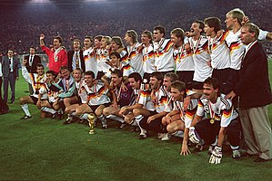

La Copa Mundial de la FIFA Italia 1990 fue decimocuarta edición de la Copa Mundial de Fútbol. Se desarrolló en Italia, entre el 8 de junio y el 8 de julio de 1990. La final fue jugada por segunda vez consecutiva por Argentina y Alemania Federal, poco antes de su unificación con Alemania Democrática. Ganaron los alemanes por 1-0 gracias a un penal pitado por el mexicano Edgardo Codesal Méndez en el minuto 83' a poco de finalizar el partido.Algunos periodistas y analistas deportivos han considerado a Italia 90 como el mundial con el peor nivel futbolístico de entre todos los realizados, producto de las reglas de juego de la época que favorecían a los equipos que buscaban evitar el desarrollo del juego antes que proponerlo, mediante acciones como faltas reiteradas y violentas a los atacantes, demoras en la reanudación del juego, permisividad de los árbitros para hacer respetar el reglamento y búsqueda del empate antes que de la victoria. Consecuencia de lo anterior, fue el hecho de que esa competición tuvo la media de goles más baja de todos los mundiales: 2,21 goles por partido. Debido a lo anterior, la FIFA decidió hacer diversas reformas a las reglas que favorecieran el desarrollo del juego y castigará fuertemente a quien buscará entorpecerlo, a aplicar desde el próximo mundial, entre las cuales destacan el otorgar 3 puntos por victoria y la decisión de prohibirle a los arqueros tomar el balón con las manos tras recibir un pase de un compañero.
